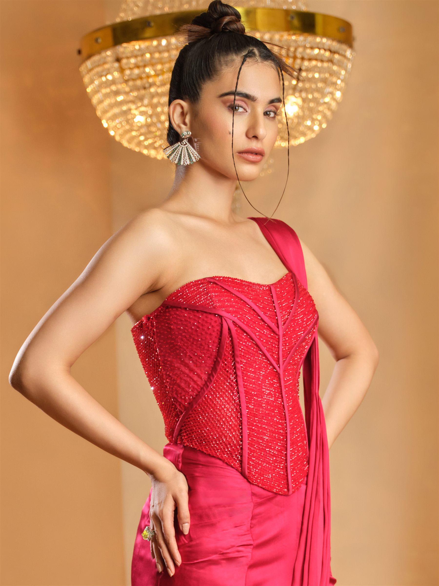
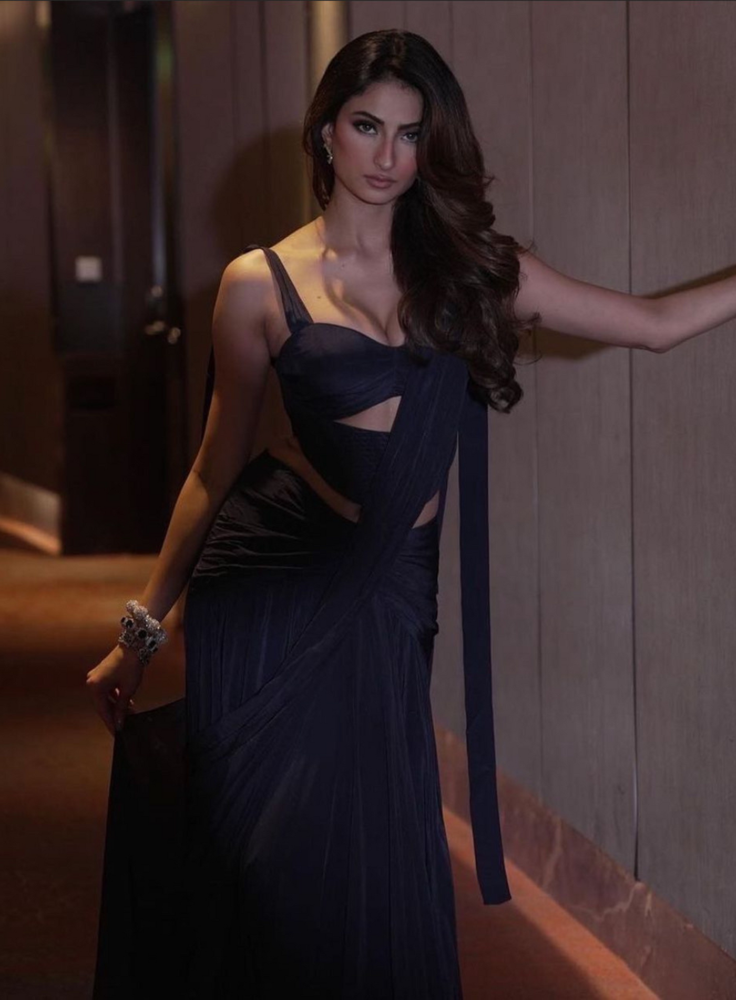
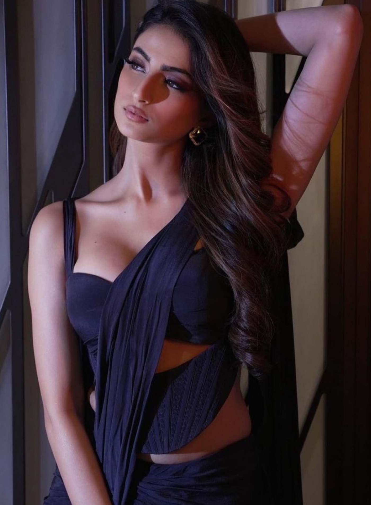
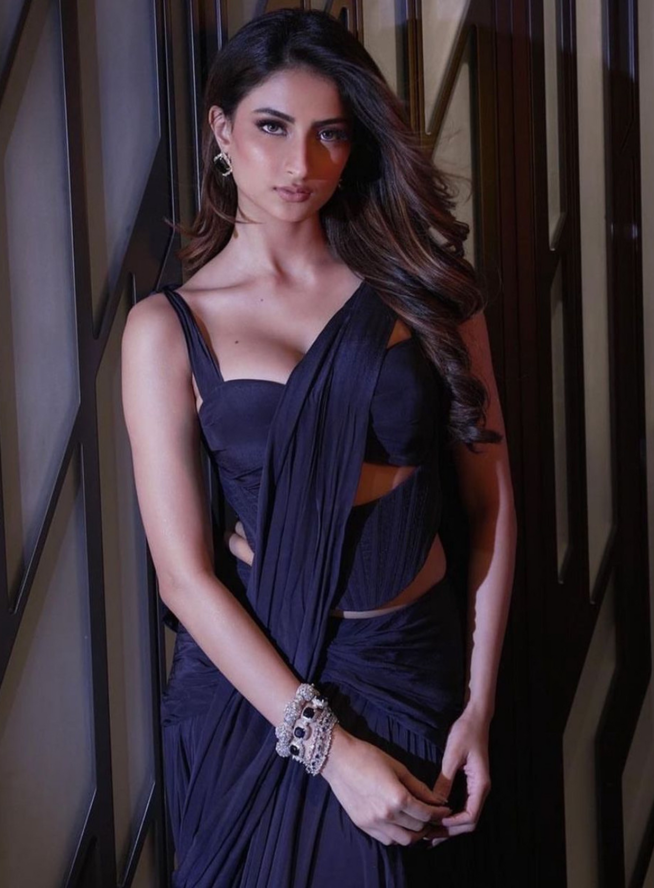
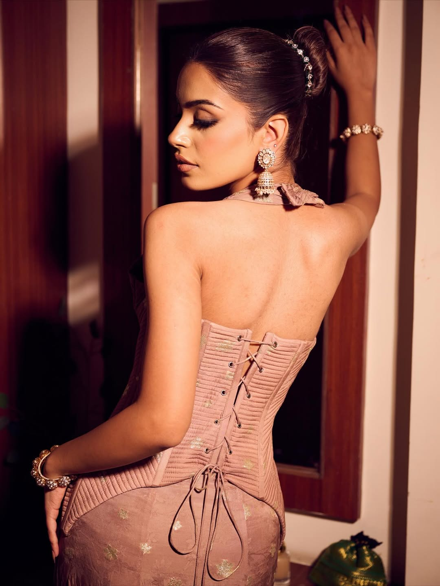

Private Styling — On Occasion
K&A does not dress a red carpet often. When it happens, it begins exactly like every other story here — one private conversation, one fitting, at a time.
"Not every collaboration is announced, and none of them are campaigns. What follows are the moments we're able to share — the rest remain private, by request."
Private Styling — K&A by Karishma & Ashita

Actress · FilmAs Worn By
The same cut-out corset silhouette that begins every K&A fitting — boned, hand-embroidered bead by bead, finished with a drape saree skirt built to move. Palak Tiwari wore it in Midnight Blue; the piece is made to order in any of the house's palettes, considered stitch by stitch for whoever wears it next.
"We wanted the structure of a corset and the soul of a saree to meet — something a woman could wear to be looked at, and feel entirely herself." K&A, on the Midnight Blue Corset Drape

Detail — Hand-Embroidered Bodice
Detail — Drape Saree Silhouette
Begin Here
On screen or off, in a fitting room in Mumbai or a conversation online — every K&A piece begins the same way. Tell us about yours.